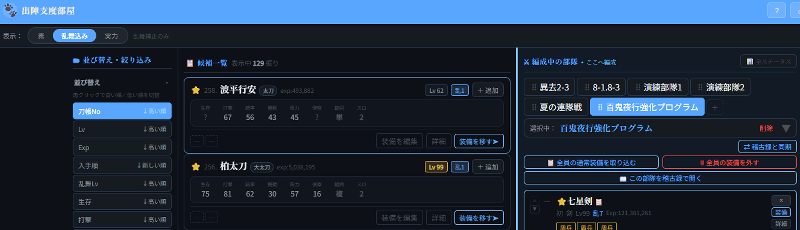
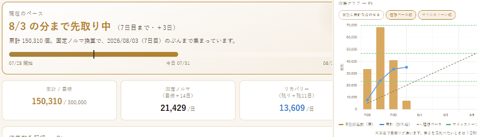
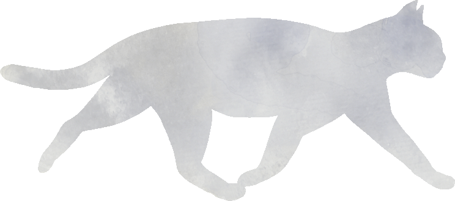

審神者の道具箱







💤
？？？
新しい道具を準備しています。
お楽しみに。
お楽しみに。
準備中
＊ 説 明 書 ＊
▼📖 このアプリについて
ゲームと連動しない、すべて手入力のツールです
ゲーム内のデータを自動取得することはありません。
"全て審神者本人の手入力"によって記録していくツールです。
"全て審神者本人の手入力"によって記録していくツールです。
💾 データの保存について
データは端末内のみに保存。定期的なバックアップを必ずお願いします
データはお使いの端末のブラウザ内にのみ保存されます。
管理人がデータを確認・アクセスすることは一切ありませんのでご安心ください。
管理人がデータを確認・アクセスすることは一切ありませんのでご安心ください。
アクセス状況（訪問数など）は、Googleアナリティクスで記録しています。
これは記録した本丸の中身とは別のものです。詳しくはプライバシーポリシーをご覧ください。
これは記録した本丸の中身とは別のものです。詳しくはプライバシーポリシーをご覧ください。
Googleドライブ同期はバックアップの一つとしてご利用ください。
※「イベント・メモのデータ」と「グラフのデータ」は
別の場所でそれぞれインポート・エクスポートされます。
※「イベント・メモのデータ」と「グラフのデータ」は
別の場所でそれぞれインポート・エクスポートされます。
Google同期のログインは、Googleの仕様により約1時間で接続が切れます。
切れた場合は「⚠ 再接続」ボタンから再接続できます。
記録は端末に保存されているため、失われることはありません。
切れた場合は「⚠ 再接続」ボタンから再接続できます。
記録は端末に保存されているため、失われることはありません。
⚠ バックアップのお願い
エクスポートまたはGoogleドライブ同期で、
定期的なバックアップを必ず行ってください。
定期的なバックアップを必ず行ってください。
🔄 ツール間の互換性
「イベント・メモのデータ」は資源帳⇄稽古録で共通です
「イベント・メモのデータ」は資源帳・稽古録で共通して使えます。
一方のアプリでエクスポートしたデータを、もう一方にインポートすることが可能です。
一方のアプリでエクスポートしたデータを、もう一方にインポートすることが可能です。
📊 資源帳 — Excelデータの読み込み
Excelに付けていた資源の記録を取り込める場合があります
これまでExcelに記録していた資源データをグラフに取り込める場合があります。
「設定」の下部に「Excel 読み込みについて」の説明があります。
「データ一覧」タブから「Excel読み込み」を実行できます。
※必ず読み込めるわけではありません。
「データ一覧」タブから「Excel読み込み」を実行できます。
※必ず読み込めるわけではありません。
🌐 推奨ブラウザ
アプリ内ブラウザ（WebView）ではGoogle同期が動きません
- PC：Chrome / Edge / Firefox
- スマートフォン：Chrome / Firefox / Safari
⚠ アプリ内ブラウザ（WebView）をお使いの方へ
SNSアプリなどのアプリ内ブラウザでは、Googleドライブとの同期が動作しません。
（Googleのセキュリティポリシーによる制限です）
同期を使う場合は上記の推奨ブラウザからアクセスしてください。
同期の代わりに「データ一覧」タブのインポート・エクスポート機能もご活用ください。
（Googleのセキュリティポリシーによる制限です）
同期を使う場合は上記の推奨ブラウザからアクセスしてください。
同期の代わりに「データ一覧」タブのインポート・エクスポート機能もご活用ください。
＊ 更 新 情 報 ＊
2026.09.17
最新
トップページ ― 画面の幅に合わせて並びが変わるようにしました
▼
画面の幅に合わせて、道具の並びが変わるようになりました。タブレットやパソコンでは、道具の絵がゆったり大きく見えます。
横に広い画面では、説明書と更新履歴が右側に並びます。スクロールしなくても目に入ります。
スマートフォンでの見え方は変わっていません。
横に広い画面では、説明書と更新履歴が右側に並びます。スクロールしなくても目に入ります。
スマートフォンでの見え方は変わっていません。
2026.09.13
稽古録 ― 髭切・膝丸の「特」を直し、刀を追加しやすくしました
▼髭切・膝丸の「特」が切り替わるレベルを直しました。あわせて、極のカードからその刀を追加できるように、個別のカードからまとめの画面へ戻れるようにしています。
▼ 詳しく見る
詳しく
稽古録 ― 髭切・膝丸の「特」を直し、刀を追加しやすくしました
髭切・膝丸の「特」が変わるレベルを直しました
- これまで特二がLv.35、特三がLv.45で切り替わる表示になっていましたが、正しくは特二がLv.50、特三がLv.75です
- 膝丸は特一がLv.25、特二がLv.50です
- 形態はレベルから計算しているため、記録し直していただく必要はありません。表示だけが変わります
- すでに記録しておられる方は、Lv.35〜74の髭切・膝丸が、これまでより手前の段階で表示されます（例：Lv.45の髭切は、これまで特三と出ていましたが、正しくは特一です）
極のカードからも、その刀を追加できるようにしました
- これまで極のカードには案内文が出るだけで、そこから刀を足すことができませんでした
- 「＋ この刀を追加（極）」を押すと、極の状態で新しく1振り増やせます
- 増えた刀はLv.1・累積経験値は空から始まります。レベルと累積経験値はご自身でご入力ください
個別のカードから、まとめの画面へ戻れるようにしました
- 刀の設定画面の左上に「◀ 刀の名前（まとめ）」が出ます
- これまで、個別のカードから設定画面を開くと「＋ この刀を追加」にたどり着けませんでした
- Lv順・Exp順・乱舞Lv順・入手順で並べているときは所持している刀すべてが個別のカードになるため、この並べ替えをお使いの方は全部の刀で行けない状態でした
- 「◀」で戻ると、保存していない変更は反映されません（✕で閉じたときと同じです）
2026.09.08
サイト全体・稽古録・出陣支度部屋 ― 新しい刀剣男士に対応し、記録を守るしくみを足しました
▼古今伝授の太刀と地蔵行平を極として記録できるようになりました。太閤左文字の極のステータスもお入れしています。あわせて、ブラウザやアプリの都合で本丸の記録が失われないよう、二つのしくみを道具箱ぜんたいに足しました。
▼ 詳しく見る
詳しく
サイト全体・稽古録・出陣支度部屋 ― 新しい刀剣男士に対応し、記録を守るしくみを足しました
新しい刀剣男士に対応しました
- 古今伝授の太刀と地蔵行平を極として記録できるようになりました
- 稽古録・出陣支度部屋の両方が対象です
- ステータスの最大値はまだ空欄です。確かめられ次第お入れします
- 空欄でも、刀の設定画面の「📊 現在ステータス」に今の数値を記録できます。修行から帰っている方はそちらをお使いください
太閤左文字の極のステータスを入れました
- 前回から空欄にしていた太閤左文字の極に、打撃・統率・機動・衝力・隠蔽・必殺の6つをお入れしました
- 生存と偵察は連結では上げられないため、まだ空欄のままです
SNSアプリの中で開くと、記録が別の場所に保存されます
- XやInstagramなどのアプリの中からリンクを開くと、SafariやChromeとは別の場所に記録が保存されます
- 同じ道具を開いても以前の記録が見えなかったり、Googleとつながらなかったりします
- その状態のときに、画面の上へ案内を出すようにしました
- 記録が見えている場合は、先に書き出し（エクスポート）をお取りください。そのファイルをSafariやChromeで開いた同じ道具に読み込めば、そのまま続けられます
- 案内は「このブラウザでは表示しない」で消せます
- 道具箱のすべての道具が対象です
手元が空のままクラウドへ保存するのを止めます
- 機種変更やブラウザの乗り換え、サイトデータの削除などで、その端末の記録が空になっていることがあります
- その状態で「クラウドへ保存」を押すと、クラウドに残っていた記録まで空で上書きされ、元に戻せません
- 手元が空のときは確認をはさむようにしました。「読み込む」を選べば、クラウドの記録をそのまま取り戻せます
- どうしても空のまま保存したいときのために「それでも保存する」も残してあります
- 道具箱のすべての道具が対象です
アンケート
実施中
アンケート
実施中